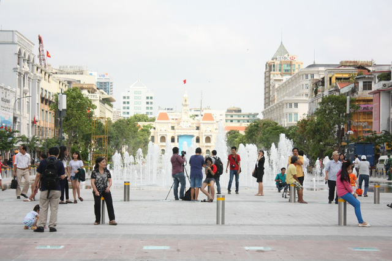

Sau 3 năm đưa vào sử dụng, phố đi bộ Nguyễn Huệ (quận 1, TPHCM) sẽ được bố trí thêm đài phun nước, hệ thống chiếu sáng; điều chỉnh và bố trí hợp lý các khu vực vệ sinh, ghế ngồi, quầy bán nước tự động, khu ẩm thực…
UBND TPHCM vừa giao Sở Quy hoạch - Kiến trúc TP đề xuất phân khu chức năng của phố đi bộ Nguyễn Huệ và bố trí thêm đài phun nước, hệ thống chiếu sáng.
Song song đó, nghiên cứu điều chỉnh và bố trí hợp lý các khu vực vệ sinh, thùng rác, ghế ngồi, quầy bán nước tự động, khu vực ẩm thực đường phố, bãi giữ xe cho tuyến phố để phục vụ khách tham quan khi thành phố tổ chức sự kiện lớn tập trung đông người.
Ngoài ra, Sở Quy hoạch – Kiến trúc nghiên cứu kết nối không gian tổng thể của phố đi bộ Nguyễn Huệ với khu vực công viên trước Nhà hát thành phố và trục đường Lê Lợi - Tôn Đức Thắng - Hàm Nghi.
Để chuẩn bị nâng cấp cải tạo đường Nguyễn Huệ, đoạn từ đường Lê Lợi đến Công viên bến Bạch Đằng, UBND TP yêu cầu Ban Quản lý phố đi bộ Nguyễn Huệ báo cáo quá trình hoạt động sau hơn 3 năm khánh thành.
Phố đi bộ Nguyễn Huệ dài 670m, rộng 64m bắt đầu từ công viên Bạch Đằng đến trụ sở UBND TPHCM được đầu tư thành quảng trường đi bộ đầu tiên của Việt Nam, mang phong cách hiện đại với tổng số vốn 430 tỷ đồng. Công trình này được khánh thành ngày 30/4/2015. Đây được xem là điểm đến vui chơi, chụp ảnh của giới trẻ Sài Gòn, khách du lịch…